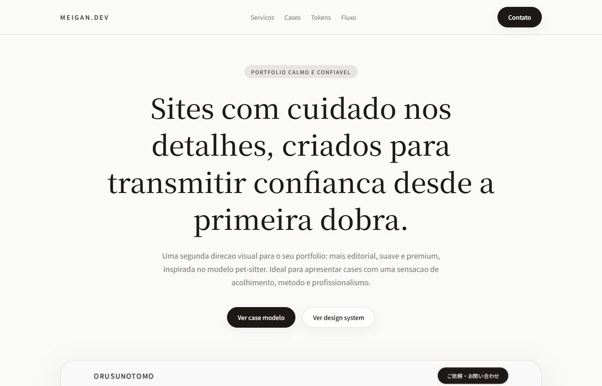
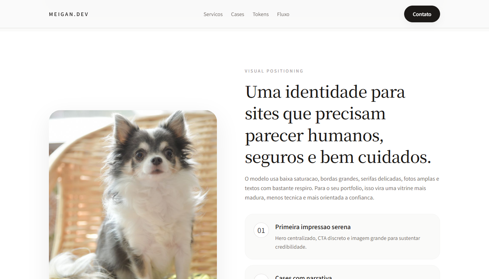
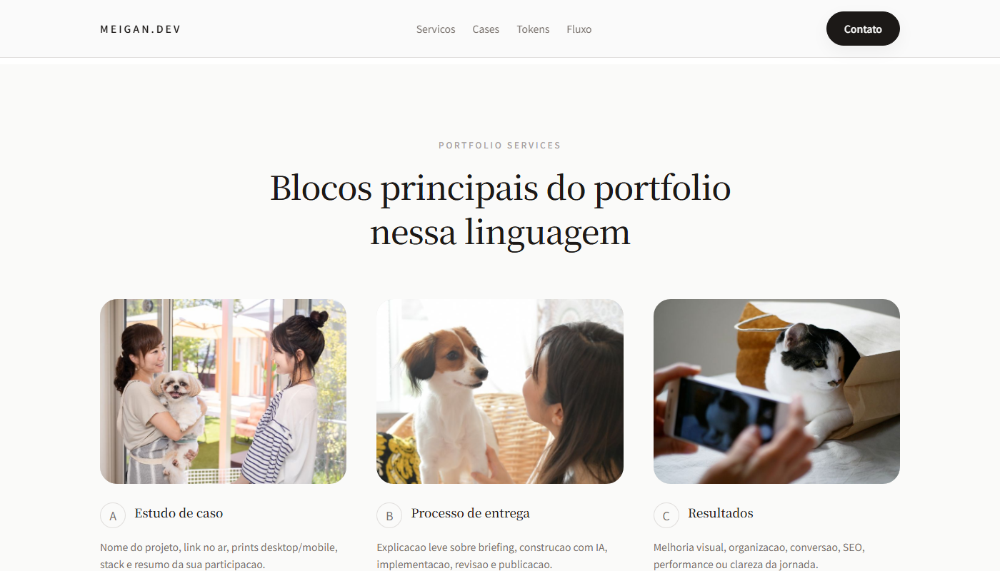
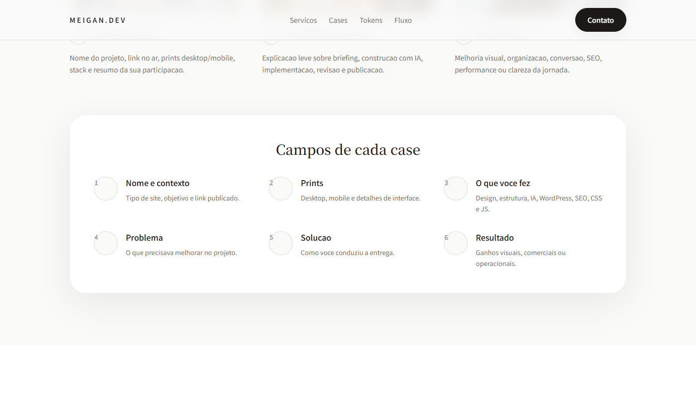
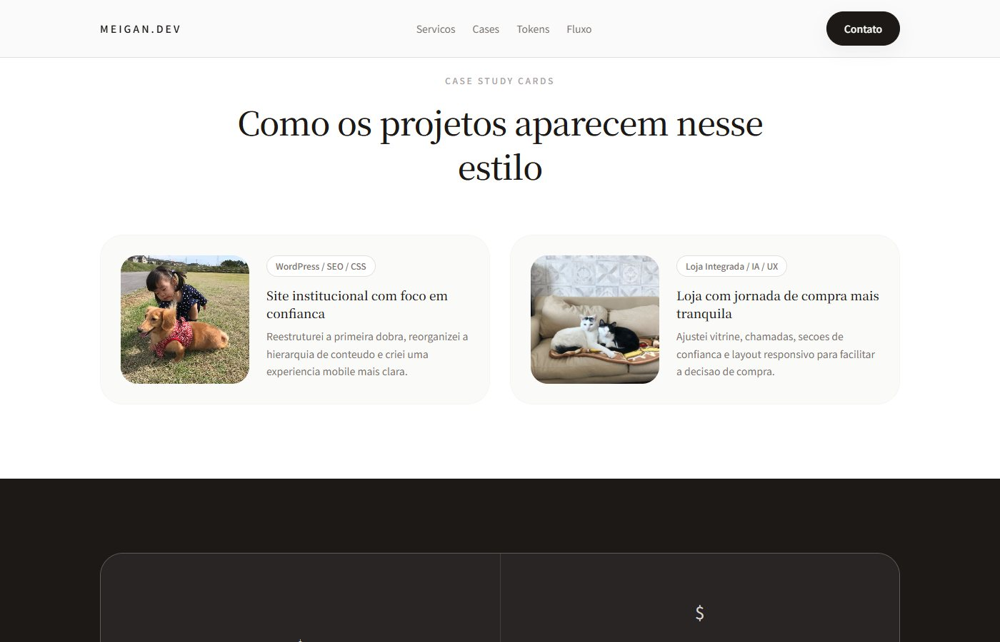
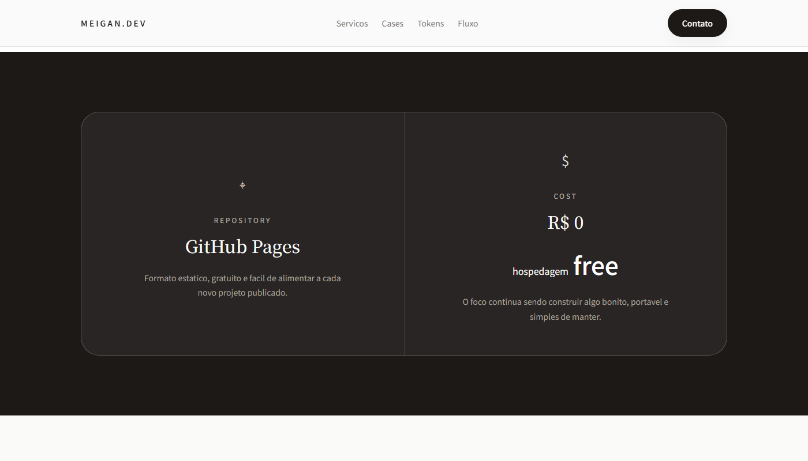
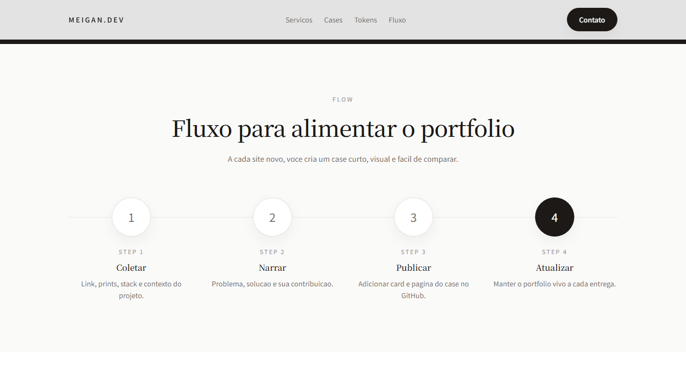
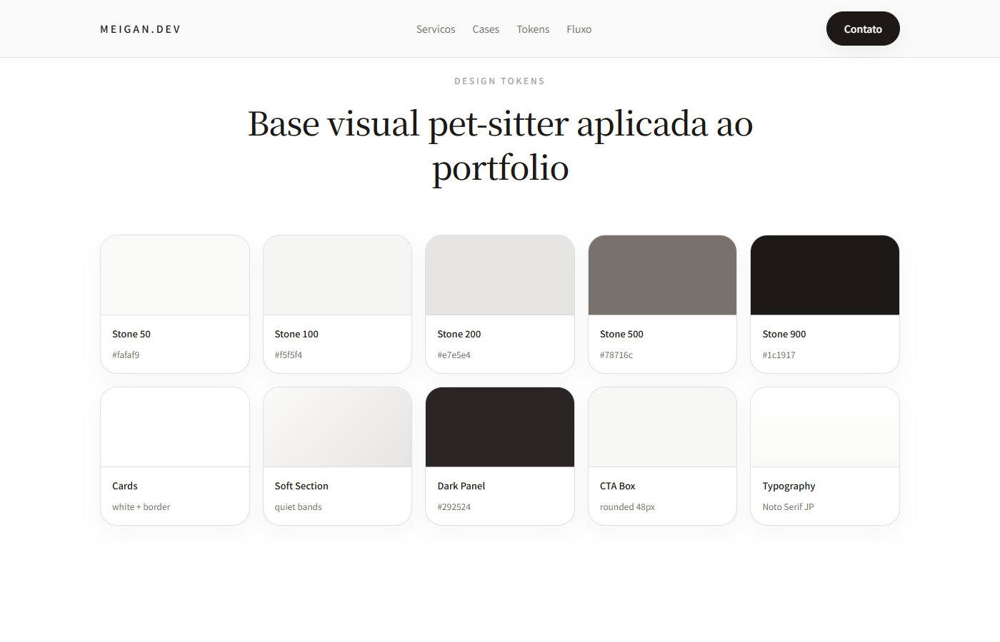

Primeira dobra
01
Tipografia ampla cria uma entrada serena e legível.
A chamada principal dá prioridade à mensagem, com navegação discreta e bastante espaço para respirar antes da apresentação dos projetos.
Um design system de portfólio que transforma a calma da referência Pet Sitter em linguagem para apresentar projetos: paleta stone, serifas, fotografia ampla e cases com contexto.

A demonstração organiza a experiência desde a primeira dobra até a ficha de cada case. A escala stone cria camadas discretas entre página, seções e cards; a combinação de Noto Serif JP com Noto Sans JP separa narrativa e informação prática. O sistema também define como coletar, narrar e atualizar novos projetos.
Da primeira dobra à atualização dos cases, estas telas mostram como a linguagem editorial organiza conteúdo, serviços e componentes.

A chamada principal dá prioridade à mensagem, com navegação discreta e bastante espaço para respirar antes da apresentação dos projetos.

A imagem de grande escala e o texto em serifas dão um tom humano à proposta. A hierarquia orienta a leitura sem deixar a fotografia virar apenas decoração.

Estudo de caso, processo de entrega e resultados aparecem em três cartões com a mesma estrutura. A repetição facilita a comparação sem uniformizar as imagens.

Nome e contexto, prints, contribuição, problema, solução e resultado formam um roteiro de publicação. O sistema não depende de improvisar a narrativa a cada projeto.

Os cards de exemplo combinam imagem, contexto e descrição breve para apresentar o trabalho sem depender apenas de um print.

A página usa uma única ruptura de tom para destacar o tema da publicação estática. O bloco mantém as serifas e as bordas suaves, mas aumenta o contraste sem perder a unidade.

Coletar material, narrar a contribuição, publicar e atualizar formam um ciclo simples. Essa etapa conecta o visual à manutenção real dos futuros cases.

A paleta stone e os componentes de bordas suaves conectam títulos, imagens e conteúdo ao longo da demonstração.
Dar a cada projeto espaço para explicar contexto e decisões sem transformar o portfólio em uma página pesada ou confusa.
Definir tokens stone, uma dupla tipográfica, cards reutilizáveis e uma ficha de case que combina imagem, texto e contribuição.
Uma demonstração navegável com abertura, blocos de serviço, exemplos de cases, fluxo de atualização e biblioteca de tokens.
Veja o contraste com o estudo retrô ou abra a demonstração completa desta proposta.